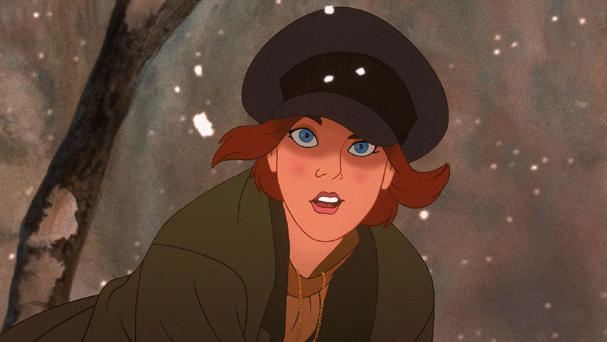

Anastasia is the main character of the animated movie "Anastasia" (1997). She is a brave and kind young woman who lost her memory and goes on a journey to discover her true identity as well as conquering Rasputin. Throughout her adventure, she learns about love, courage, and her royal past.
Learn more about her here: Anastasia Wikipedia Page